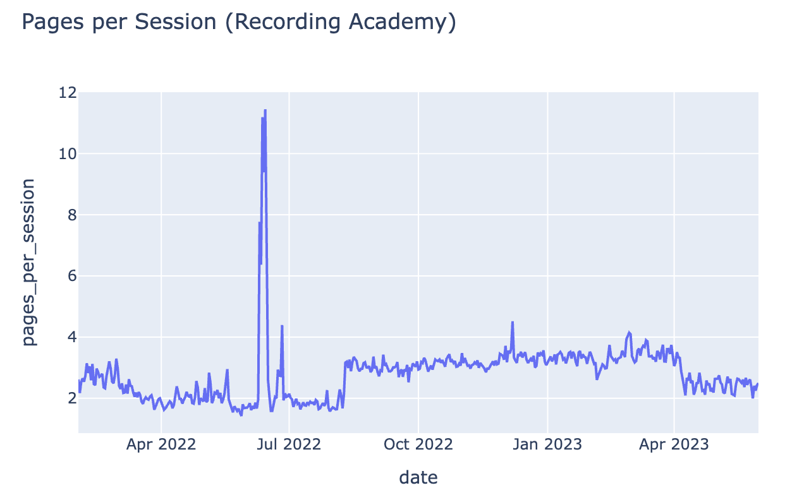

Digital Platform Strategy
Executive Summary
In 2022, The Recording Academy’s VP of Digital Strategy, Ray Starck, executed a major structural pivot: splitting their unified digital presence into two distinct domains—grammy.com (consumer/audience-facing) and recordingacademy.com (industry/corporate-facing). This case study analyzes historical and post-split tracking data to evaluate the impact of this split, isolate user behavior across platforms, and provide data-driven recommendations to optimize user engagement and retention during peak cultural events.
Data Environment & Feature Engineering
The analysis was performed across multi-year tracking logs containing traffic metrics for both domains. To extract meaningful strategic insights, raw session parameters were transformed into distinct behavioral indicators:
- KPI Engineering: Synthesized high-level metrics including Pages per Session (
pageviews/sessions) and Bounce Rate percentages to quantify deep user engagement versus superficial click-through behavior. - Temporal Event Mapping: Engineered specific binary temporal flags—
awards_weekandawards_night—to separate baseline, "evergreen" traffic from viral, high-volume traffic spikes when seasonal pop-culture engagement peaks. - Device Segmentation: Isolated and calculated the percentage share of mobile traffic versus desktop traffic to evaluate mobile-responsiveness needs during live event windows.
Analytical Deep Dive & Behavioral Insights


1. Temporal Traffic Anomaly Modeling
Using time-series visualizations built in Plotly Express, the data maps an incredibly aggressive, cyclical demand curve.
Traffic Volume
▲
│ ▲ [Awards Night Spike: Millions of Users]
│ ╱ ╲
│ ╱ ╲
│ ╱ ╲
│ ╱ ╲ ▲ [Awards Week Build-up]
│________╱ ╲___╱ ╲_________ [Baseline Off-Season Traffic]
└──────────────────────────────────────────────────────────► Timeline- The Trend: While baseline traffic remains stable and relatively low throughout the year, it experiences an explosive multi-million user spike during
awards_week, culminating in a massive traffic peak onawards_night. - Strategic Takeaway: This confirms that the consumer-facing platform (
grammy.com) functions primarily as an event-driven media engine. It requires high scalability and low latency during a highly restricted operational window, rather than steady-state audience acquisition.
2. The Post-Split Segmentation Narrative
By separating consumer traffic from industry professionals, the data reveals a clear divergence in user intent:
grammy.com(The Consumer Hub): Characterized by immense visitor volume, shorter average session durations, and highly volatile bounce rates that scale alongside viral pop-culture moments. Users are looking for quick information—winners, fashion, and performance clips.recordingacademy.com(The B2B Portal): Characterized by lower, highly predictable visitor volume but significantly stronger engagement depth. Users exhibit higher Pages per Session and longer Average Session Durations, signaling an industry audience interacting with dense content (e.g., voting guidelines, membership criteria, grant applications).
Competitor Benchmarking & Core Performance Matrix
Based on behavioral aggregates, the platform's digital footprint stands out in specific areas while presenting distinct optimization opportunities:
| Performance Area | Strengths Identified | Key Metric to Improve | Strategic KPI Focus |
|---|---|---|---|
| Peak Traffic Delivery | Exceptional volume capture during live broadcast windows. | High transactional bounce rates during peak event hours. | Bounce Rate Mitigation |
| Mobile Experience | Dominant mobile visitor share, proving strong cross-device accessibility. | Session duration drop-off on complex pages. | Mobile UX Streamlining |
| Platform Segmentation | Successfully isolated high-intent B2B users from general consumers. | Conversion of consumer traffic into year-round engagement. | Evergreen Funnel Conversion |
Strategic Consulting Recommendations
To fully leverage the dual-website architecture, the following data-driven strategies are proposed:
- Infrastructure Scalability & Caching for Peak Windows: Because consumer traffic is heavily consolidated into a single week, prioritize server bandwidth allocation and page-weight optimization for
grammy.comduring Awards Week. Reducing asset sizes and leveraging strict content delivery network (CDN) caching will combat latency and minimize the bounce rates caused by slow loading speeds on mobile networks during the broadcast. - High-Value Funnel Integration for B2B Growth: Use the massive consumer traffic spikes on
grammy.comas an acquisition funnel. Implement subtle, high-converting call-to-actions (CTAs) directing eligible independent creators and industry professionals to the membership portals onrecordingacademy.com. - Evergreen Content Calendars for Consumer Retention: To soften the post-awards traffic drop-off on
grammy.com, deploy a targeted, year-round multimedia content strategy (e.g., "Behind the Record" deep dives, acoustic sessions, and genre-specific editorial pieces) to convert anonymous event-night viewers into consistent monthly active users (MAUs).